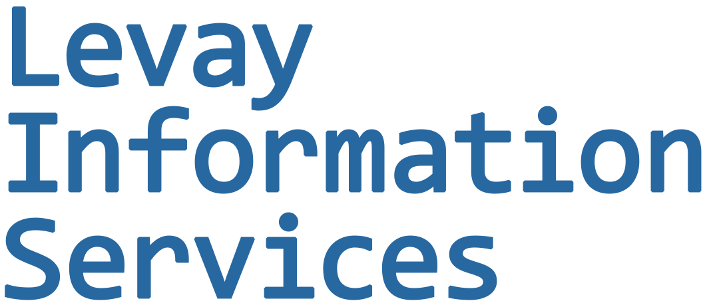
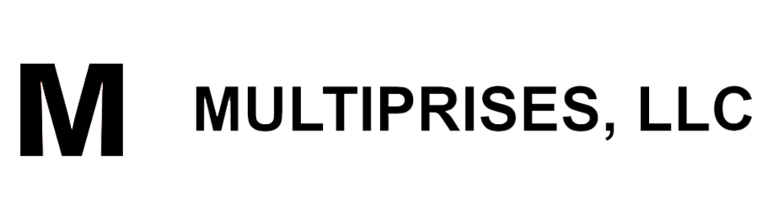
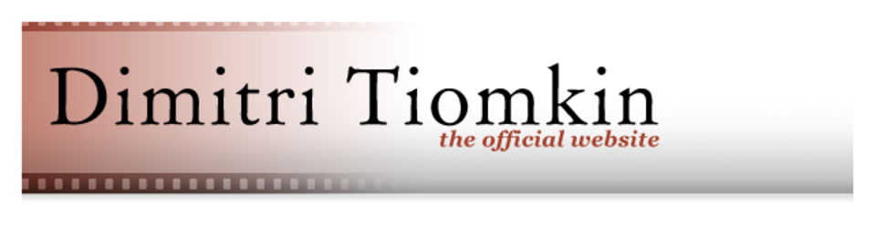
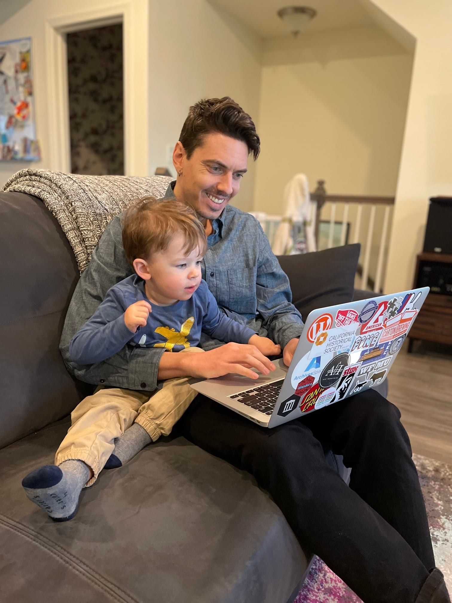

Website Development and Maintenance
Small-site builds, cleanup, updates, and practical maintenance for organizations that need a dependable web presence without a heavy platform footprint.

Levay Information Services
Hi, I'm Bill. I'm an information professional who helps nonprofits and small businesses create and maintain sustainable digital systems and manage information.
What I do
Small-site builds, cleanup, updates, and practical maintenance for organizations that need a dependable web presence without a heavy platform footprint.
Planning and execution support for digital collections, preservation workflows, and access-oriented archival projects.
Structured cleanup, migration, and normalization work for content and operational data that has outgrown its original system.
Who I've worked with


Background
Bill Levay is the Digital Archivist at the New York Philharmonic, where he manages digital assets and collections, including the Shelby White and Leon Levy Digital Archives.
He is a Certified Archivist and holds a master's in library and information science from the Pratt Institute School of Information.

Contact
Tell me a little about your project and I'll get back to you shortly:
bill@levay.info